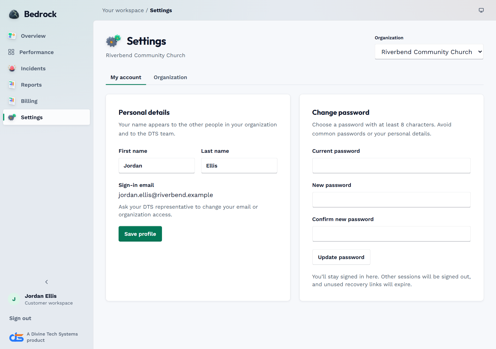
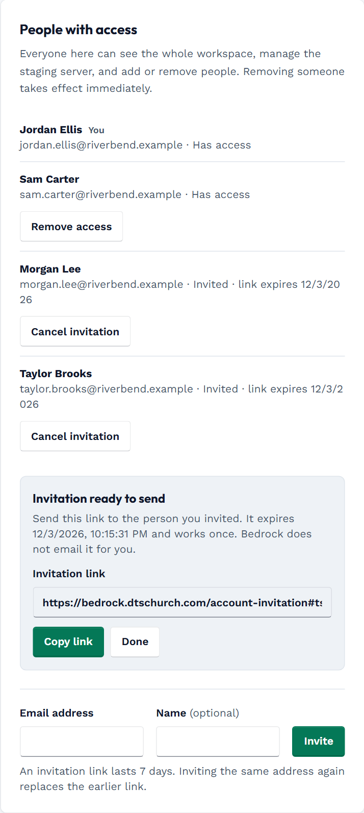
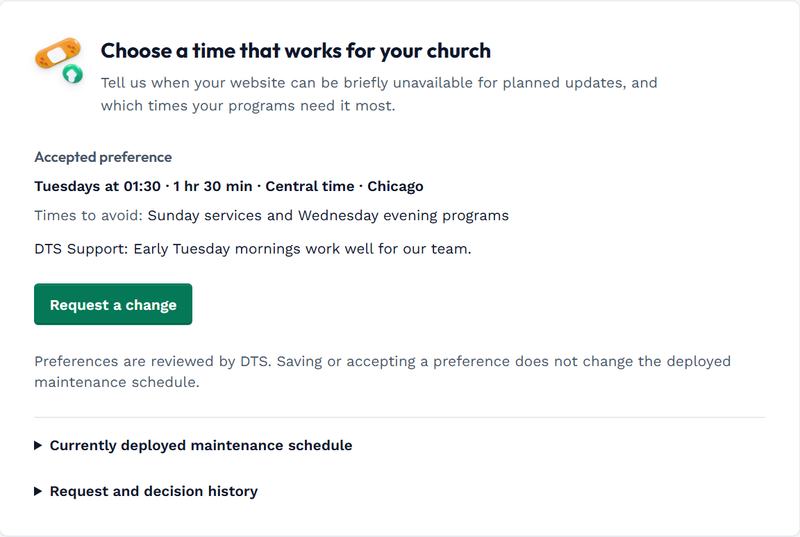
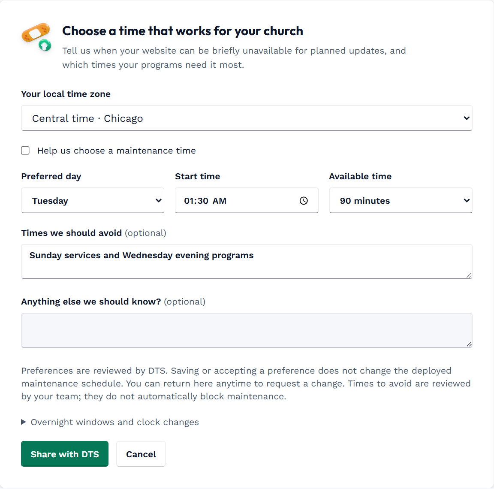

Bedrock
Settings and people
Settings has two tabs. My account is about you: your name and password. Organization is about your church: its details, who has access, what DTS looks after, and when maintenance suits you.
My account

Your name
Type your First name and Last name and press Save profile. Your name is shown to the other people at your church and to DTS, for example beside a staging server change you made.
Your sign-in email cannot be changed here. Ask DTS.
Your password
- Type your Current password.
- Type the new one in New password and Confirm new password. Use at least 8 characters, and avoid common passwords and your own name or email.
- Press Update password.
You stay signed in where you are. Anywhere else you were signed in is signed out, and any unused password reset link stops working.
If you do not know your current password, ask DTS for a password reset link.
People with access
On the Organization tab, People with access lists everyone who can open your church’s workspace. Everyone on the list can see everything, manage the staging server, and add or remove people.

Inviting someone
- Type their Email address and, if you like, their Name.
- Press Invite. The box Invitation ready to send appears with a link.
- Press Copy link and send it to them yourself, by email or message. Bedrock does not email it for you.
- Press Done.
The link works once and lasts 7 days. Until they use it, they show in the list as Invited with the date the link expires. What they do next is in Getting started.
The link is shown only this one time. If you lose it or it expires, invite the same email address again. That makes a new link and the earlier one stops working.
Cancelling an invitation or removing someone
- Cancel invitation stops a link that has not been used yet.
- Remove access takes someone off the list. It takes effect immediately: they are shut out the next time they do anything.
You cannot remove yourself, so a church can never lock itself out. If you are leaving, ask a colleague or DTS to remove you. Review this list whenever someone leaves your staff.
Organization details and recorded resources
Organization details shows your church’s name, website, time zone and plan as DTS has them. Times throughout Bedrock are shown in this time zone. If anything is wrong, ask DTS to correct it.
Recorded resources lists what DTS has on file for you: your website, and the servers, databases and monitoring for each environment. Recorded means DTS has it on file; whether it is healthy is on the Overview and Performance pages.
Maintenance preferences
Planned updates can make your website briefly unavailable. Maintenance preferences tell DTS when that would bother your church least.

Setting or changing your preference
- Press Set maintenance preferences, or Request a change if you already have one.
- Check Your local time zone.
- Choose a Preferred day, a Start time, and how long the website can be unavailable under Available time. If you are not sure, tick Help us choose a maintenance time instead.
- Under Times we should avoid, list anything DTS should work around, such as Sunday services, weekday programs or special dates.
- Press Share with DTS.

What happens after you share it
- It shows as Awaiting DTS review. Your existing schedule stays in place meanwhile.
- DTS either accepts it (Preference accepted) or replies asking for a change (Changes requested), with a note. Either way it also shows on the Overview under What happens next.
- Currently deployed maintenance schedule shows the schedule actually in use. Accepting a preference records the agreement; DTS then applies the schedule separately, so the two can differ for a short while.
- Request and decision history lists every request and reply.
Times to avoid are read by your DTS team; they do not automatically block maintenance. For a one-off date that matters, such as Easter weekend or a big event, tell DTS directly as well.
If you see Your organization manager can update these preferences instead of a button, your account can read the preference but not change it. Ask a colleague who can, or ask DTS.